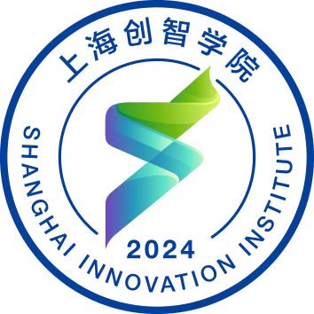
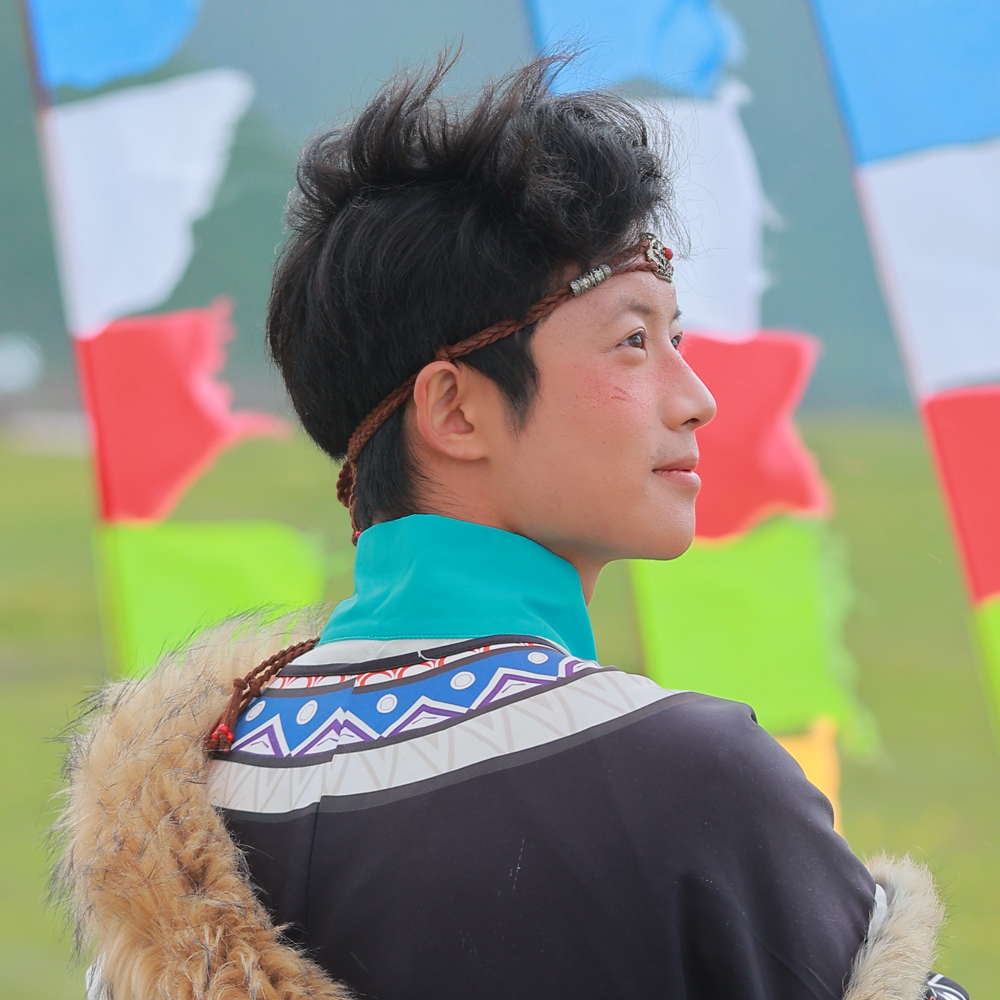
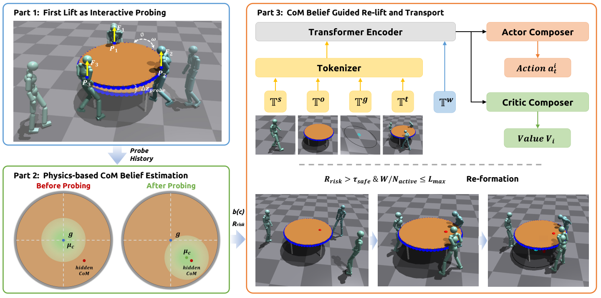
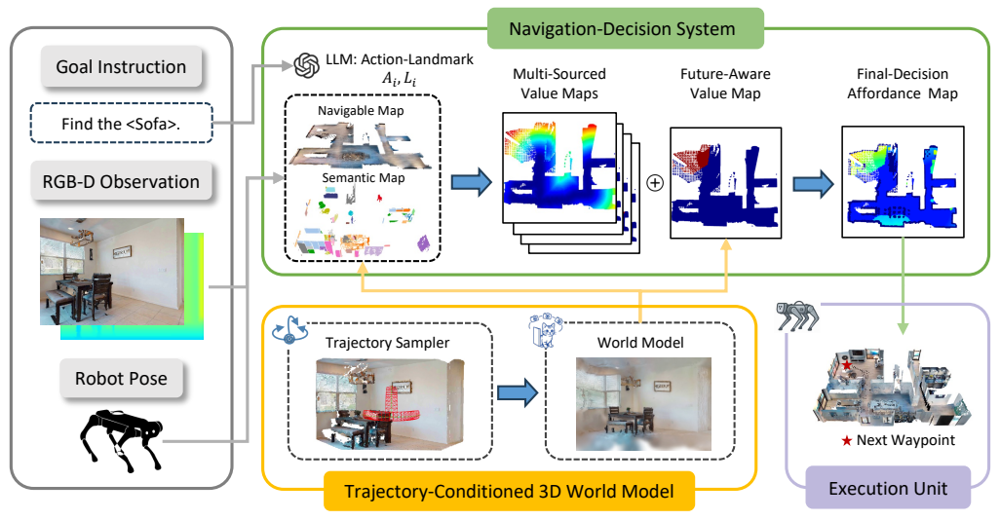
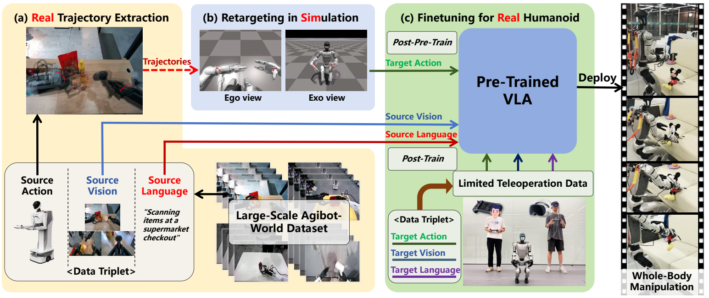
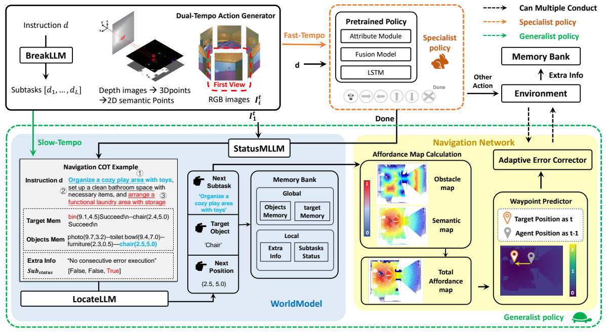

Da Huang | 黄达
I am a Ph.D. student in Embodied AI at 
I build embodied systems that connect perception and reasoning with planning and real-world robot execution. My experience includes deploying navigation systems on Unitree Go2 robots, multi-robot localization and communication, and simulation-based humanoid cooperation.
I received my B.E. in Mechanical Engineering from Shanghai Jiao Tong University in 2024. Outside research, I enjoy photography, fitness, and badminton.

News
- Aug. 2026 Schrödinger's Navigator was accepted to CoRL 2026 (Poster).
- Jan. 2026 TrajBooster was accepted to ICRA 2026 (Poster).
- Sep. 2025 TP-MDDN was accepted to NeurIPS 2025 (Poster).
Publications
Selected publications and manuscripts. † Equal contribution. * Corresponding authors.
 |
CoM-HOI: Belief-Guided Cooperative Humanoid-Object Interactions under Uncertain Mass PropertiesSubmitted to AAAI 2027 CoM-HOI is a belief-guided hierarchical framework for cooperative humanoid transport under uncertain mass properties. It treats the first lift as physical probing and converts interaction responses into a probabilistic belief over the hidden center of mass. This belief guides load prediction, risk assessment, contact allocation, and safe team re-formation, enabling robust transport as mass eccentricity increases. |
 |
Schrödinger's Navigator: Imagining an Ensemble of Futures for Zero-Shot Object NavigationCoRL 2026 (Poster) Schrödinger's Navigator reasons over multiple trajectory-conditioned imagined 3D futures for zero-shot object navigation. An adaptive occluder-aware sampler directs imagination toward uncertain regions, while a Future-Aware Value Map aggregates future cues for proactive action selection. Simulation and real-world Go2 experiments demonstrate improved hidden-target discovery and risk-aware navigation under severe occlusion. |
 |
TrajBooster: Boosting Humanoid Whole-Body Manipulation via Trajectory-Centric LearningHomepage / Paper / Code / Model / Dataset / Pipeline ICRA 2026 (Poster) TrajBooster transfers wheeled-humanoid demonstrations to bipedal humanoids through end-effector trajectories. It retargets dual-arm trajectories to Unitree G1 in simulation and pairs the resulting whole-body actions with source vision and language to adapt a VLA. With only 10 minutes of target-domain teleoperation data for final fine-tuning, the system enables squatting, cross-height manipulation, and coordinated whole-body motion, improving robustness and zero-shot skill transfer. |
 |
TP-MDDN: Task-Preferenced Multi-Demand-Driven Navigation with Autonomous Decision-MakingNeurIPS 2025 (Poster) TP-MDDN introduces a benchmark for long-horizon navigation involving multiple demands and explicit task preferences. AWMSystem combines instruction decomposition, goal selection, and task monitoring with MASMap spatial memory. Dual-tempo action generation integrates zero-shot planning with policy-based fine control, while an adaptive error corrector handles failures in real time to improve navigation robustness. |
{kind=link}
{kind=link}
{kind=link}
{kind=link}
Experience
Shanghai Innovation Institute & Shanghai Jiao Tong University
Ph.D. Student in Embodied AI
Research focus: humanoid loco-manipulation, multi-robot navigation and collaboration.
Shanghai Jiao Tong University
B.E. in Mechanical Engineering
School of Mechanical Engineering, Qian Xuesen Class; minor in Law.
Projects
Robotics and AI for Assistive Navigation
Developed an assistive navigation system on a custom hexapod robot, combining multi-sensor semantic mapping, gait-adaptive obstacle avoidance, and human-robot interaction. I integrated the visual language model for scene understanding and built a four-bucket representation of human-robot-obstacle spatial relationships.
National Silver Award, China International College Students' Innovation Competition (2024). Granted patent: 一种牵引式机器人导盲系统及方法 (202411378670.7).
Technical Skills
Languages and tools: Python, C/C++, LaTeX, GitHub, Docker, Claude Code, Codex.
Robotics: Linux, ROS 2, Nav2, FAST-LIO2, GICP, Isaac Sim/Lab, MuJoCo, and hands-on quadruped and humanoid robot deployment.
Service
President, Student Union
Coordinated social-practice and labor-education programs involving over 400 students and faculty across 109 teams. Organized science outreach and preparations for national innovation competitions, serving over 3,000 participants.
Awards and Honors
- 2024: Outstanding Graduate of Shanghai (top 1%); First-Class Changjiang Siyuan Inspirational Scholarship (top 1%).
- 2022: Tongsheng Scholarship (top 1%).